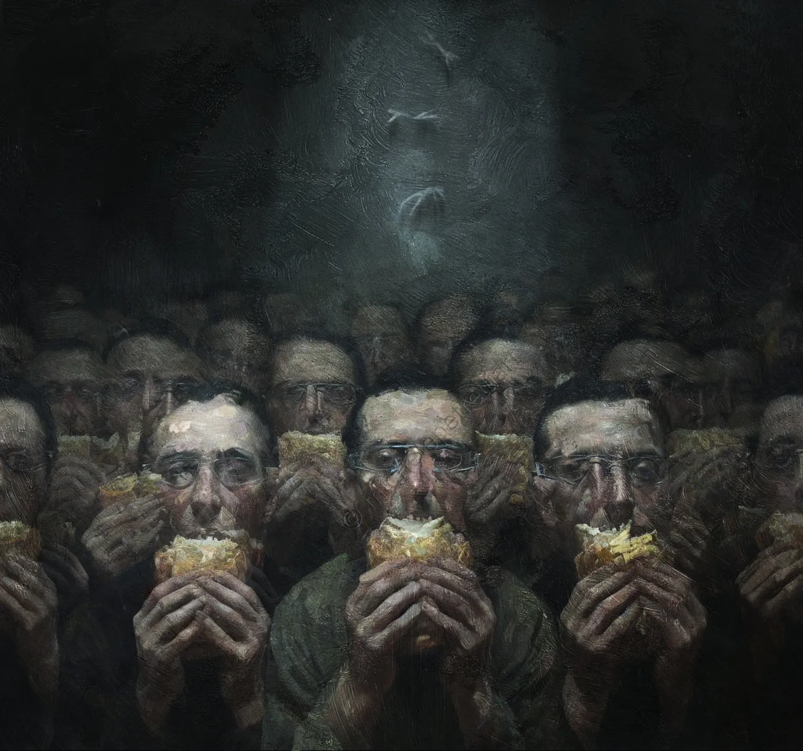

4218 The Snackers
The work serves as a ruthless critique of the bulimia of visual consumption and the passivity of contemporary man. The title itself creates a brutal contrast between the banality of the act and the violence of the scene. The choice to depict a mass of identical figures suggests a total loss of individuality: we are no longer people, but biological units engaged in a repetitive function. The act of eating a sandwich does not signify nourishment, but rather a compulsive mastication—a filling of the void that occurs while the true "meal" consists of what these people are being forced to watch.
The most psychologically disturbing element is the metallic device clamping the eyelids. Recalling the imagery of A Clockwork Orange, the work eliminates free will. The subject is condemned to a perpetual vision, unable to close their eyes. There is an atrocious tension between the primordial pleasure of food and the torture of the eye: the mind is a prisoner of a constant external input, turning the act of eating into an unconditional reflex, devoid of joy.
The beam of light hovering above the crowd acts as a metaphysical extractor. Despite the apparent stasis, the light sucks the figures upward. This is not a redemptive ascent or an enlightenment, but a forced removal. As the subjects are consumed by the vision and hollowed out, they become light, ready to be "digested" by the system and carried away, immediately replaced by new, identical units. Psychologically, this introduces the concept of the obsolescence of being: the ascent represents the moment the observer has completed their function as a consumer. There is no higher level awaiting them, only the disposal of those who are now exhausted, rendering the cycle infinite. That void above is the final destination for those who have ceased to be witnesses and have become mere waste in an imposed experience.
This license does not allow you to modify or use these images for commercial purposes.
You are allowed to share them only by clearly crediting and tagging the author.